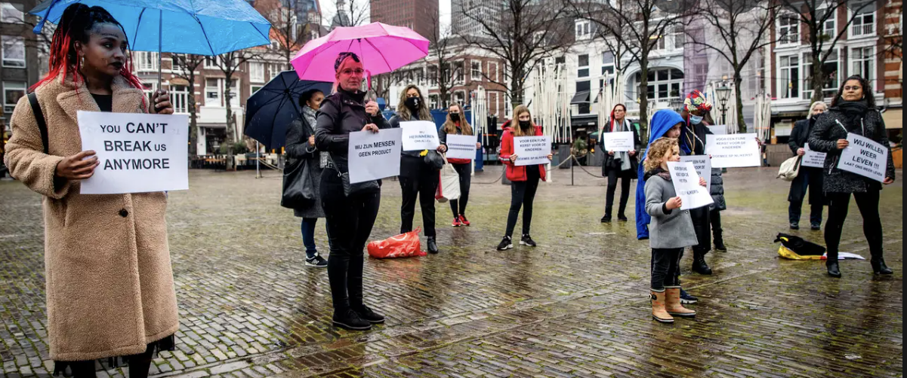

Data Use

Explain how to interpret the outputs of the algorithm, perhaps in a context-sensitive manner
The algorithm used by the Dutch government to create risk profiles for individuals applying for child care benefits
resulted in individuals getting wrongly denied, leaving families destroyed as children were given up to foster care
since their parents could not support them and even some committing suicde from the insane taxes handed out by the
government. Those that were denied were mainly minorities or low-income, disproportionately denying these groups
benefits based on unfair parameters.
Identifies and explains at least two ways in which proper use of the model could result in increased
justice in appropriate contexts
If the model used by the Dutch government had worked as intended, there would have been a reduction in those
receiving child care benefits fraudulently. This would have resulted in more resources being allocated to the
families that actually needed the benefits. Proper use of the model could have also resulted in families receiving
benefits quicker as the algorithm would assess individuals much faster than a team of humans ever could.
Describes and explains at least two potential situations - contexts, uses, etc - in which the model should be
updated or revised (perhaps no longer using it) for ethical reasons
The first and most obvious case the model should have been updated would have been for those that were denied
benefits based on nationality/race. Denying anyone simply because of the color of their skin or where they came
from is obviously morally wrong. The fact that minorities scored riskier profiles simply because of race is quite
frightening. Another situation where the model needed to be updated would have been for all those families that
gave up their children to foster care. I wonder if this was because they were of low-income status and thus wrongly
denied benefits.
For each of those situations, propose an ethical plan-of-response (such as collecting more data, ceasing model use,
etc) if we find ourselves in that problematic situation
I think in order to address the nationality/race bias in the program, programmers could consider making the
algorithm race/nationality blind or having a third party review of how the model is performing in underserved
communities could make the model more progresssive. In assisting those with low-income, the Dutch government
should have again had some sort of “checks and balances” to the system to analyze the data on who was getting
denied benefits and why some profiles were considered riskier than others to adjust the algorithm as necessary.